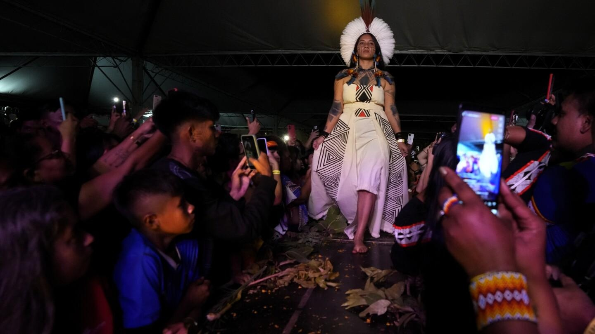

Brazilian Indigenous women use fashion to showcase their claim to rights and the demarcation of landBrazilian Indigenous women use fashion to showcase their claim to rights and the demarcation of land An Indigenous model wears a creation from Indigenous designers during a fashion event, as part of the Third March of Indigenous Women, to claim women’s rights and the demarcation of Indigenous lands, in Brasilia, Brazil, Tuesday, Sept. 12, 2023. (AP Photo/Eraldo Peres) An Indigenous model paints the faces of other models during a fashion event, as part of the Third March of Indigenous Women, to claim women’s rights and the demarcation of Indigenous lands, in Brasilia, Brazil, Tuesday, Sept. 12, 2023. (AP Photo/Eraldo Peres) Attendees watch as Indigenous models wear creations from Indigenous designers during a fashion event, as part of the Third March of Indigenous Women, to claim women’s rights and the demarcation of Indigenous lands, in Brasilia, Brazil, Tuesday, Sept. 12, 2023. (AP Photo/Eraldo Peres) Attendees record as Indigenous models wear creations from Indigenous designers during a fashion event, as part of the Third March of Indigenous Women, to claim women’s rights and the demarcation of Indigenous lands, in Brasilia, Brazil, Tuesday, Sept. 12, 2023. (AP Photo/Eraldo Peres) Indigenous women try on dresses before the start of the fashion event, as part of the Third March of Indigenous Women, to claim women’s rights and the demarcation of Indigenous lands, in Brasilia, Brazil, Tuesday, Sept. 12, 2023. (AP Photo/Eraldo Peres) Attendees record as Indigenous models wear creations from Indigenous designers during a fashion event, as part of the Third March of Indigenous Women, to claim women’s rights and the demarcation of Indigenous lands, in Brasilia, Brazil, Tuesday, Sept. 12, 2023. (AP Photo/Eraldo Peres) Attendees record as Indigenous models wear creations from Indigenous designers during a fashion event, as part of the Third March of Indigenous Women, to claim women’s rights and the demarcation of Indigenous lands, in Brasilia, Brazil, Tuesday, Sept. 12, 2023. (AP Photo/Eraldo Peres) An Indigenous model wears a creation from Indigenous designers during a fashion event, as part of the Third March of Indigenous Women, to claim women’s rights and the demarcation of Indigenous lands, in Brasilia, Brazil, Tuesday, Sept. 12, 2023. (AP Photo/Eraldo Peres) An Indigenous model wears a creation from Indigenous designers during a fashion event, as part of the Third March of Indigenous Women, to claim women’s rights and the demarcation of Indigenous lands, in Brasilia, Brazil, Tuesday, Sept. 12, 2023. (AP Photo/Eraldo Peres) An Indigenous model wears a creation from Indigenous designers during a fashion event, as part of the Third March of Indigenous Women, to claim women’s rights and the demarcation of Indigenous lands, in Brasilia, Brazil, Tuesday, Sept. 12, 2023. (AP Photo/Eraldo Peres) An Indigenous model paints the faces of other models during a fashion event, as part of the Third March of Indigenous Women, to claim women’s rights and the demarcation of Indigenous lands, in Brasilia, Brazil, Tuesday, Sept. 12, 2023. (AP Photo/Eraldo Peres) An Indigenous model paints the faces of other models during a fashion event, as part of the Third March of Indigenous Women, to claim women’s rights and the demarcation of Indigenous lands, in Brasilia, Brazil, Tuesday, Sept. 12, 2023. (AP Photo/Eraldo Peres) Attendees watch as Indigenous models wear creations from Indigenous designers during a fashion event, as part of the Third March of Indigenous Women, to claim women’s rights and the demarcation of Indigenous lands, in Brasilia, Brazil, Tuesday, Sept. 12, 2023. (AP Photo/Eraldo Peres) Attendees watch as Indigenous models wear creations from Indigenous designers during a fashion event, as part of the Third March of Indigenous Women, to claim women’s rights and the demarcation of Indigenous lands, in Brasilia, Brazil, Tuesday, Sept. 12, 2023. (AP Photo/Eraldo Peres) Attendees record as Indigenous models wear creations from Indigenous designers during a fashion event, as part of the Third March of Indigenous Women, to claim women’s rights and the demarcation of Indigenous lands, in Brasilia, Brazil, Tuesday, Sept. 12, 2023. (AP Photo/Eraldo Peres) Attendees record as Indigenous models wear creations from Indigenous designers during a fashion event, as part of the Third March of Indigenous Women, to claim women’s rights and the demarcation of Indigenous lands, in Brasilia, Brazil, Tuesday, Sept. 12, 2023. (AP Photo/Eraldo Peres) Indigenous women try on dresses before the start of the fashion event, as part of the Third March of Indigenous Women, to claim women’s rights and the demarcation of Indigenous lands, in Brasilia, Brazil, Tuesday, Sept. 12, 2023. (AP Photo/Eraldo Peres) Indigenous women try on dresses before the start of the fashion event, as part of the Third March of Indigenous Women, to claim women’s rights and the demarcation of Indigenous lands, in Brasilia, Brazil, Tuesday, Sept. 12, 2023. (AP Photo/Eraldo Peres) Attendees record as Indigenous models wear creations from Indigenous designers during a fashion event, as part of the Third March of Indigenous Women, to claim women’s rights and the demarcation of Indigenous lands, in Brasilia, Brazil, Tuesday, Sept. 12, 2023. (AP Photo/Eraldo Peres) Attendees record as Indigenous models wear creations from Indigenous designers during a fashion event, as part of the Third March of Indigenous Women, to claim women’s rights and the demarcation of Indigenous lands, in Brasilia, Brazil, Tuesday, Sept. 12, 2023. (AP Photo/Eraldo Peres) Attendees record as Indigenous models wear creations from Indigenous designers during a fashion event, as part of the Third March of Indigenous Women, to claim women’s rights and the demarcation of Indigenous lands, in Brasilia, Brazil, Tuesday, Sept. 12, 2023. (AP Photo/Eraldo Peres) Attendees record as Indigenous models wear creations from Indigenous designers during a fashion event, as part of the Third March of Indigenous Women, to claim women’s rights and the demarcation of Indigenous lands, in Brasilia, Brazil, Tuesday, Sept. 12, 2023. (AP Photo/Eraldo Peres) An Indigenous model wears a creation from Indigenous designers during a fashion event, as part of the Third March of Indigenous Women, to claim women’s rights and the demarcation of Indigenous lands, in Brasilia, Brazil, Tuesday, Sept. 12, 2023. (AP Photo/Eraldo Peres) An Indigenous model wears a creation from Indigenous designers during a fashion event, as part of the Third March of Indigenous Women, to claim women’s rights and the demarcation of Indigenous lands, in Brasilia, Brazil, Tuesday, Sept. 12, 2023. (AP Photo/Eraldo Peres) BRASILIA, Brazil (AP) — Indigenous women in Brazil’s capital Brasilia showcased their creations during a fashion event as part of the Third March of Indigenous Women to claim women’s rights and the demarcation of Indigenous lands. Under a huge white marquee, models in headdresses, necklaces and traditional attire strutted along a catwalk lined with green foliage to the cheers of a couple of hundred onlookers, many of whom had their smartphones out to share the event on social networks. Kajina Maneira da Costa, from the Nukini people in Acre state, near the border with Peru, said she was nervous before taking to the stage, but was proud to be representing her people. “There still exists a lot of prejudice. It’s not normal to see an Indigenous fashion show,” the 19-year-old said. Kitted out in a bright yellow dress and headdress, Célia Xakriabá, a federal lawmaker from the south-eastern state of Minas Gerais, said on stage that the event was about “decolonizing fashion.” “Today we showed the power of our creation in clothing … our headdresses and our ancestry. We participate in politics when we sing and parade,” Xakriabá added later in a post on Instagram. Xakriabá was voted in during last year’s October elections, at the same time as Brazilian President Luiz Inácio Lula da Silva defeated far-right incumbent Jair Bolsonaro. Since taking office in January, Lula has given significantly more attention to the demands of Indigenous peoples than his predecessor. Bolsonaro opposed Indigenous rights, refused to expand Indigenous territories and had a record of statements critics called racist. In Lula’s third, non-consecutive term, eight Indigenous territories have been demarcated, and he created the country’s first Ministry of Indigenous Peoples, headed by Indigenous woman Sonia Guajajara. Indigenous women are increasingly center stage on Brazil’s political scene, and even within their communities. The Third March of Indigenous Women, which took place from Sept. 11 to 13, is a testament to their growing movement. “Indigenous men had visibility, but now women are adding their strength to the defense of their territory too,” said Ana Paula da Silva, a researcher at Rio de Janeiro State University’s Indigenous peoples study program. “They are marching to say ‘we are here’ and it’s no longer possible to keep ignoring us,” she added. ———- Hughes reported from Rio de Janeiro. |
 |